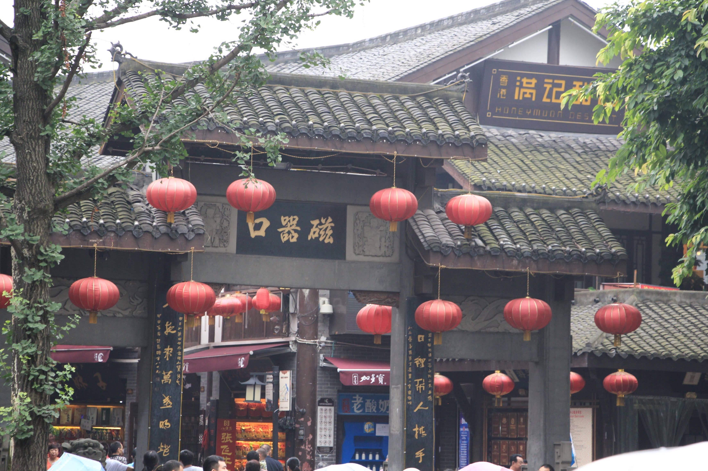
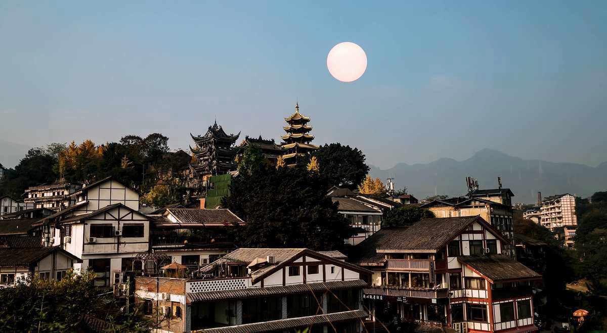
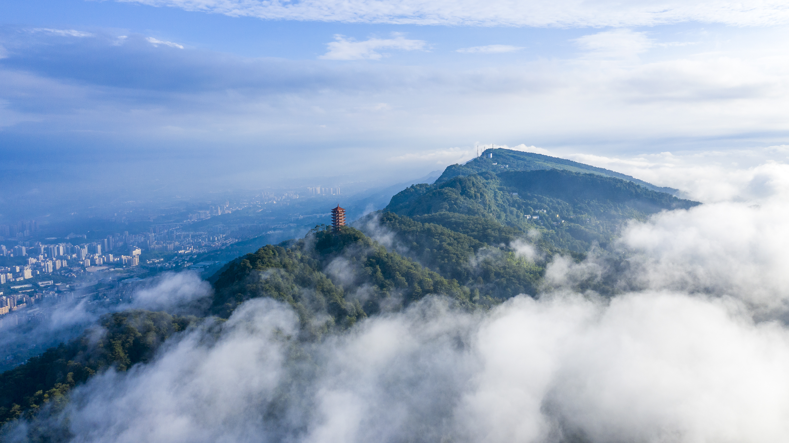
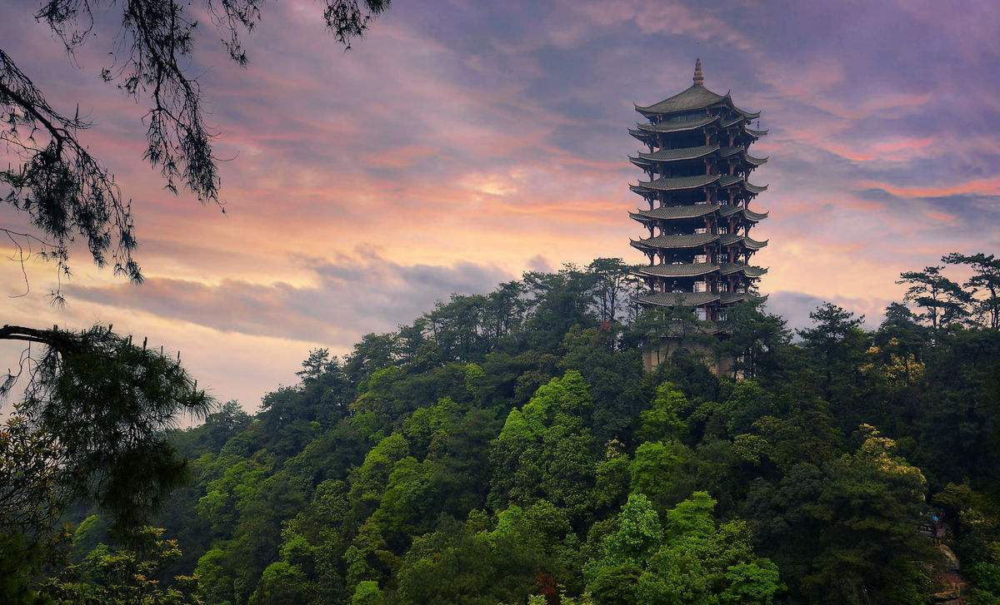
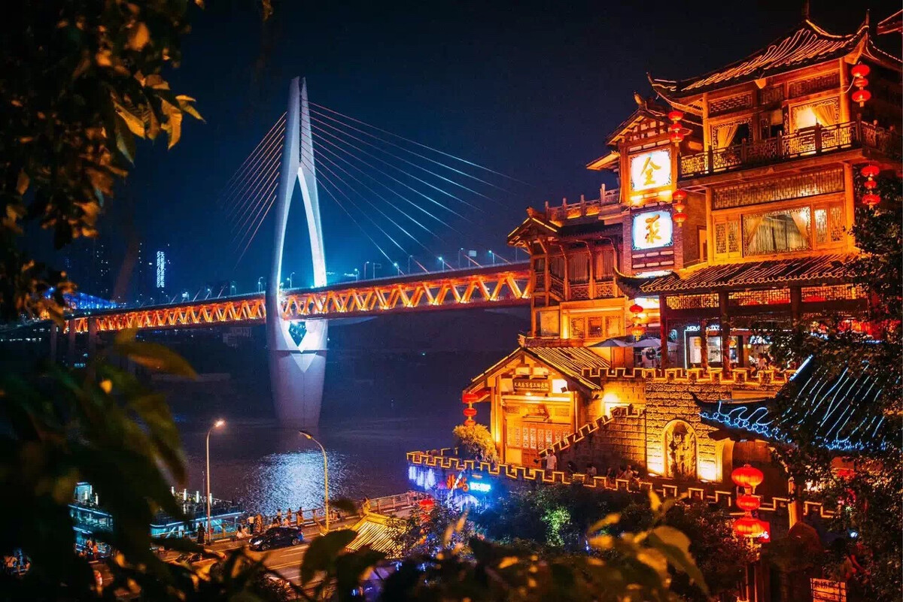
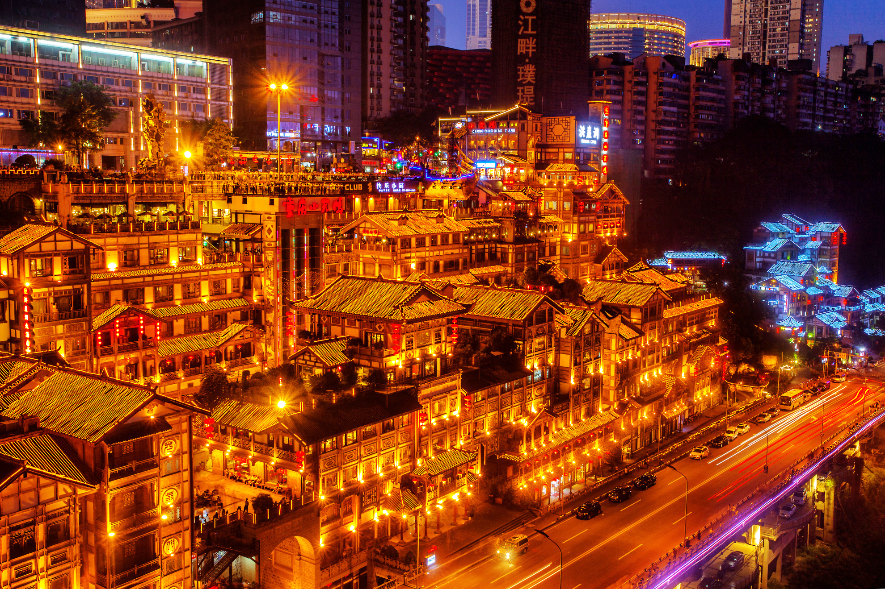

| 首页 | 北京 | 云南 | 黑龙江 |
重庆市，简称“渝”，别称山城、江城，是中华人民共和国直辖市、国家中心城市、超大城市 ，国务院批复的国家重要中心城市之一、长江上游地区经济中心 ，成渝地区双城经济圈核心城市 ，国家重要先进制造业中心、西部金融中心、西部国际综合交通枢纽和国际门户枢纽。总面积8.24万平方千米, 2022年末常住人口3213.34万， 辖38个区县。
重庆市地处中国西南部，是长江上游地区经济、金融、科创、航运和商贸物流中心 ，全国唯一兼具四种类型的国家物流枢纽 、国际消费中心城市、西部大开发重要战略支点、“一带一路”和长江经济带重要联结点及内陆开放高地； 有世界文化遗产大足石刻、世界自然遗产武隆喀斯特和南川金佛山等景观。
重庆市是国家历史文化名城 、巴渝文化发祥地，有3000余年建城史 ，自古被称为“天生重庆” 。宋光宗先封恭王再即帝位，升恭州为重庆府，由此得名。夏商巴国在此建都，元末大夏在此建国。 清末重庆开埠及国民政府迁都重庆，使重庆成为近代中国大后方政治军事经济文化中心，红岩精神起源地。 新中国初为西南大区驻地及直辖市，1997年又恢复为直辖市。
|   |
磁器口古镇，原名龙隐镇，位于重庆市沙坪坝区磁南街1号，沙坪坝区东北部嘉陵江畔。北距沙坪坝中心5千米，重庆市中心14千米，南距石井坡3千米。 [8] 磁器口古镇总面积32.5万平方米，其中保存完好的古镇核心区14.3万平方米，分布于马鞍山东侧和东南侧。古镇依山而建，由山起城。以磁器口正街和横街为骨架，42条巷道垂直于正街和横街向马鞍山脊和溪沟边缘呈枝状发展，形成特征明显的树枝状平面格局。 [8] 2006年11月，磁器口古镇被评定为国家AAAA级旅游景区。 [10] 2020年11月18日，磁器口古镇当选“成渝十大文旅产业地标” [13] 。2022年8月23日，磁器口古镇景区入选重庆市智慧旅游景区典型案例。 [6] 2022年9月，磁器口古镇入选全国“非遗旅游景区”。 [7] |
|
缙云山 位于重庆市北碚区嘉陵江温塘峡畔，古名巴山。是7000万年前“燕山运动”造就的“背斜”山岭。山间白云缭绕，似雾非雾，似烟非烟，磅礴郁积，气象万千。早晚霞云，姹紫嫣红，五彩缤纷。古人称“赤多白少”为“缙”，故名缙云山。 缙云山与嘉陵江小三峡、合川钓鱼城一并被定为国家级自然风景名胜区。缙云山总占地面积76平方千米，海拔350米-951米。缙云山景色宜人，植物资源丰富，素有北有缙云、南有石笋之美誉。 2020年2月，为致敬奋斗在抗“疫”一线的医护工作者，自疫情结束恢复开园起至2020年年底，全国医护工作者凭有效证件免费参观。 [1] |
  |
|   |
洪崖洞 ，原名洪崖门，是古重庆城门之一，位于重庆市渝中区嘉陵江滨江路88号，2003年，总投资3.85亿元对洪崖洞片区进行旧城拆迁改造，于2006年9月竣工开业，是兼具观光旅游、休闲度假等功能的旅游区 [1] [3] 。 洪崖洞是重庆市重点景观工程，建筑面积4.6万平方米，主要景点由吊脚楼、仿古商业街等景观组成 [3] 。洪崖洞一共有11层，夜晚灯光从晚上6点开灯，10点熄灯。可望吊脚群楼观洪崖滴翠，逛山城老街赏巴渝文化，烫山城火锅看两江汇流，品天下美食。形成了“一态、三绝、四街、八景”的经营形态，体现了巴渝文化休闲业态 [8] 。 2007年11月，重庆洪崖洞民俗风貌区被评定为国家AAAA级旅游景区 [15] 。2020年11月18日，洪崖洞被列入“成渝十大文旅新地标” [4] 。2021年12月，洪崖洞被列入“重庆市第二批历史地名保护名录” [17] 。 |
©版权所有：左文科 2250303002
联系邮箱：3503278377@qq.com